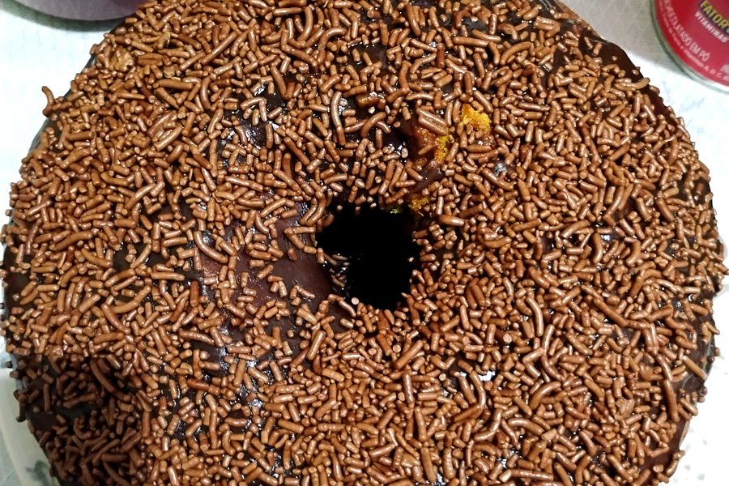
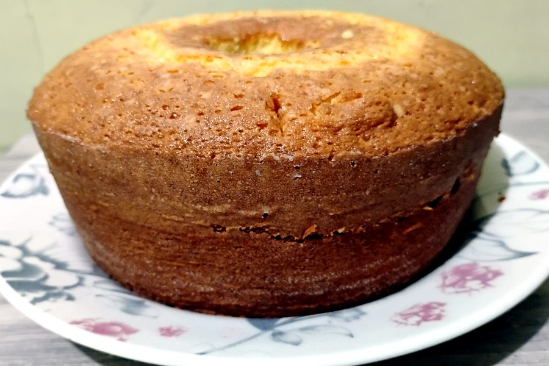
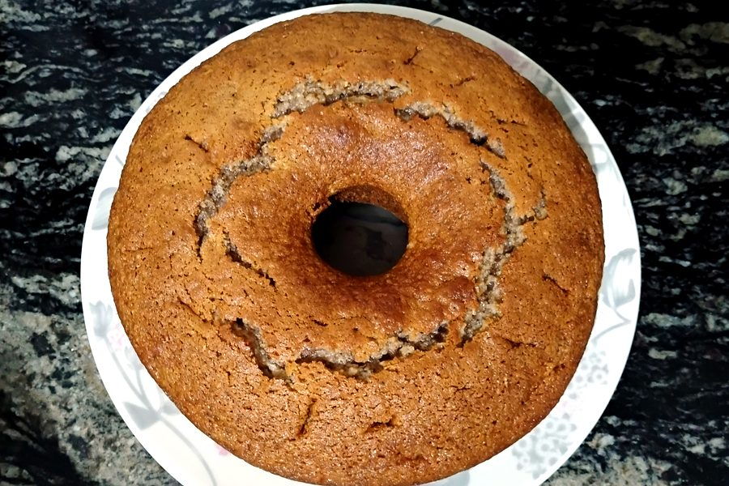
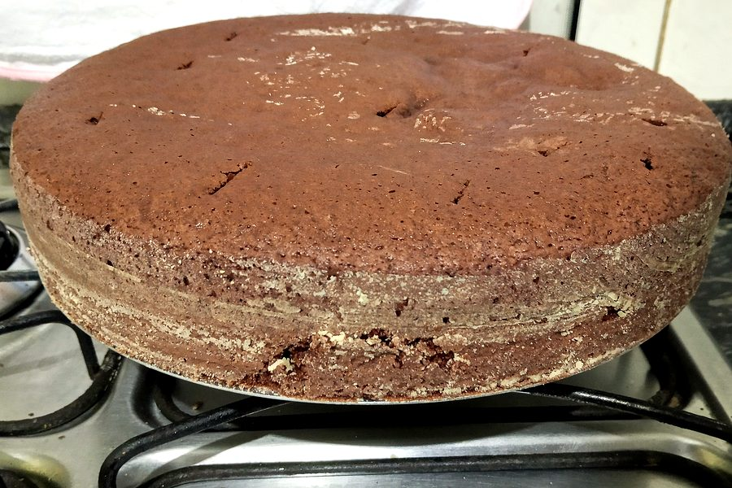
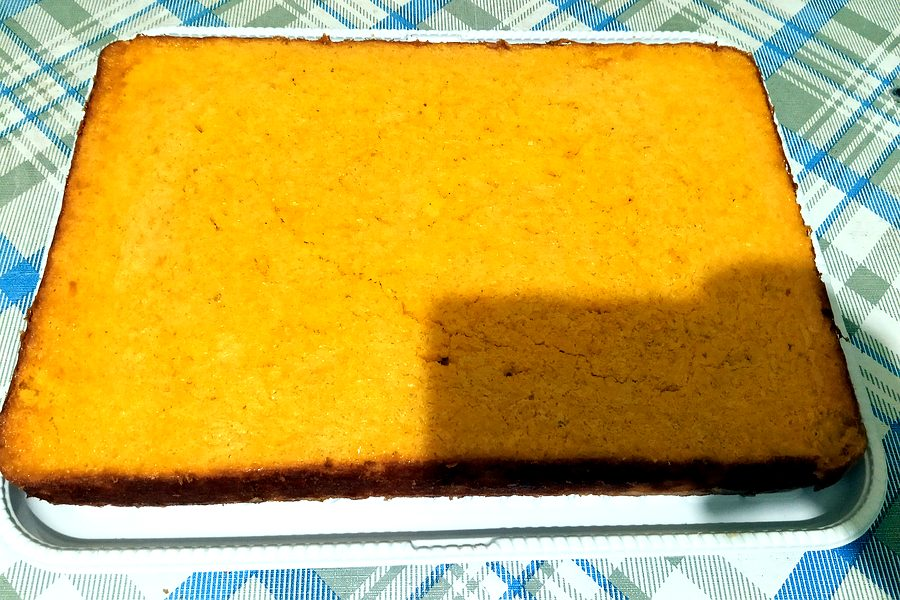
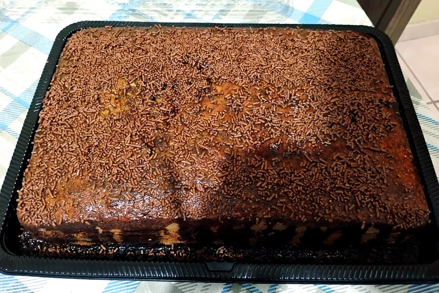
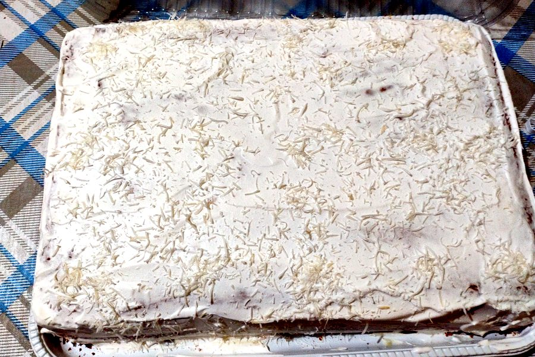

Bolo de pote, forma redonda e retangular, em Quiririm, Taubaté. Com entrega na sua casa.
Cada bolo é preparado com dedicação e sob encomenda. Consulte o cardápio, escolha um sabor e agende seu pedido com antecedência.

Feitos em casa, com dedicação.






Escolha o formato do seu bolo.
Porções individuais, boas para presentear e para festas.
Para o café da família e aniversários.
Para servir mais pessoas.
Entregamos na sua casa. Consulte a taxa conosco.
Escolha o sabor e diga para quando precisa. Respondemos pelo WhatsApp.
Rua Evandalo Pinto dos Santos, nº 30 – Quiririm – Taubaté – SP